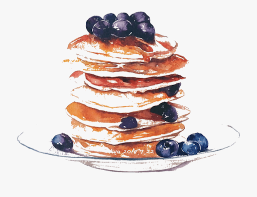
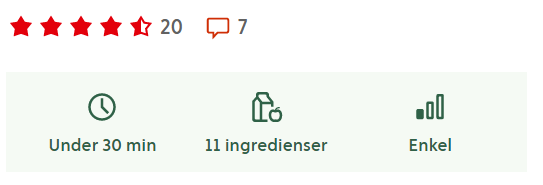

Blåbärspannkakor


Ingridienser
- 3 ägg
- 6 dl mjölk
- 2 1/2 dl vetemjöl
- 1 msk socker
- 1/2 tsk salt
- 300 g djupfrysta blåbär
- 1/2 dl florsocker
Gör så här
- Sätt ugnen på 200°C
- Vispa ihop äggen och hälften av mjölken
- Tillsätt mjölet och vispa till en klimpfri smet
- Häll i resten av mjölken och tillsätt socker och salt
- Häll smeten i en lätt smord långpanna, ca 30x40 cm (för 4 port). Strö på blåbären
- Grädda i ca 25 min
- Pudra över florsockret
- Servera blåbärspannkakan skuren i bitar med en klick vaniljglass